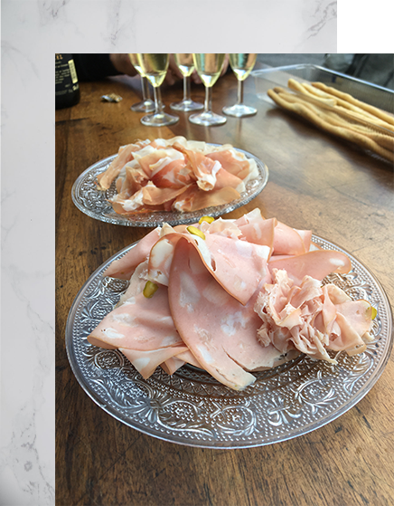

Bienvenue à
L'instinct Gourmand
Le rendez-vous des épicuriens En terrasse, au soleil un verre à la main de chianti. Sur la table, poser des gressins et une chiffonnade de jambon cru de Parme ou San Daniele. Vous voilà en Italie ou presque ... L'après-midi un sirop bio ou un excellent jusde pommes ou jus de poires de nos supers producteurs. Déguster une glace de notre Artisan glacier Scaramouche : hibiscus, mielet thym de provence, romarin huile d'olive pignons, gianduja, lavande et bien d'autres.